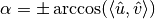

rotation_matrix_from_to¶
- odl.tomo.util.utility.rotation_matrix_from_to(from_vec, to_vec)[source]¶
Return a matrix that rotates
from_vectoto_vecin 2d or 3d.Since a rotation from one vector to another in 3 dimensions has (at least) one degree of freedom, this function makes deliberate but still arbitrary choices to fix these free parameters. See Notes for details. For the applied formula in 3d, see this Wikipedia page about Rodrigues' rotation formula.
- Parameters:
- from_vec, to_vec
array-like, shape(2,)or(3,) Vectors between which the returned matrix rotates. They should not be very close to zero or collinear.
- from_vec, to_vec
- Returns:
- matrix
numpy.ndarray, shape(2, 2)or(3, 3) A matrix rotating
from_vectoto_vec. Note that the matrix does not include scaling, i.e. it is not guaranteed thatmatrix.dot(from_vec) == to_vec.
- matrix
Notes
In 3d, the matrix corresponds to a rotation around the normal vector , where and are the normalized versions of
 , the
vector from which to rotate, and
, the
vector from which to rotate, and  , the vector to which
should be rotated.
, the vector to which
should be rotated.The rotation angle is determined as . Its sign corresponds to the sign of , where is the binormal vector.
In the case that and are collinear, a perpendicular vector is chosen as if , else . The angle in this case is if , otherwise
 .
.Examples
In two dimensions, rotation is simple:
>>> from_vec, to_vec = [1, 0], [1, 1] >>> mat = rotation_matrix_from_to(from_vec, to_vec) >>> to_vec_normalized = np.divide(to_vec, np.linalg.norm(to_vec)) >>> np.allclose(mat.dot([1, 0]), to_vec_normalized) True >>> from_vec, to_vec = [1, 0], [-1, 1] >>> mat = rotation_matrix_from_to(from_vec, to_vec) >>> to_vec_normalized = np.divide(to_vec, np.linalg.norm(to_vec)) >>> np.allclose(mat.dot([1, 0]), to_vec_normalized) True
Rotation in 3d by less than
pi:>>> from_vec, to_vec = [1, 0, 0], [-1, 1, 0] >>> mat = rotation_matrix_from_to(from_vec, to_vec) >>> to_vec_normalized = np.divide(to_vec, np.linalg.norm(to_vec)) >>> np.allclose(mat.dot([1, 0, 0]), to_vec_normalized) True
Rotation by more than
pi:>>> from_vec, to_vec = [1, 0, 0], [-1, -1, 0] >>> mat = rotation_matrix_from_to(from_vec, to_vec) >>> to_vec_normalized = np.divide(to_vec, np.linalg.norm(to_vec)) >>> np.allclose(mat.dot([1, 0, 0]), to_vec_normalized) True